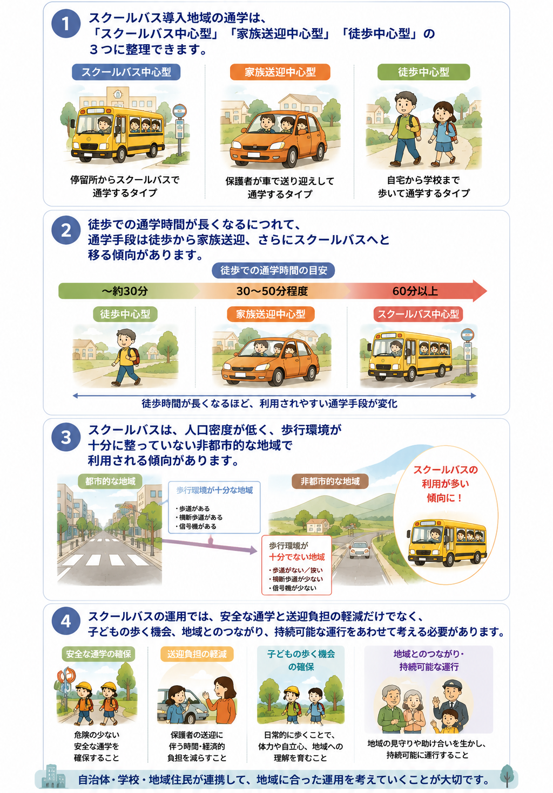

子どもの通学時のスクールバス利用
スクールバスはどう使われている？
日本では、多くの小学生が歩いて学校に通っています。しかし、少子化に伴う学校の統廃合によって、特に人口の少ない地域では通学距離や時間が長くなっています。また、通学中の交通事故や犯罪への不安もあり、子どもたちの安全な通学を支える手段として、スクールバスの導入が広がっています。一方、利用できる条件や運行方法は地域ごとに異なり、その使われ方は十分に明らかになっていません。そこで本研究では、スクールバスが導入されている地域の通学実態を把握し、今後のよりよい運用を考えるための基礎的な知見を得ることを目的としました。

スクールバスは通学をどう変えるのか？
日本では、多くの小学生が歩いて学校に通っています。しかし、少子化に伴う学校の統廃合によって学校区が広がり、特に人口の少ない地域では、通学距離や通学時間が長くなっています。また、歩道や横断歩道などが十分に整っていない通学路では、交通事故や犯罪への不安もあります。スクールバスは、こうした地域で子どもの通学手段を確保し、安全に学校へ通えるようにする役割を担っています。
一方、徒歩通学は、毎日の身体活動となるだけでなく、友だちや地域の人と出会い、地域の様子を知り、自分で判断して行動する機会でもあります。そのため、スクールバスの利用によって、子どもが日常的に歩く時間や、地域の中で経験を積む機会が少なくなることも懸念されます。また、限られた車両や人員、予算の中で、誰が利用できるのかを公平に定め、効率的に運行することも課題です。安全で便利な通学を支えながら、子どもの歩く機会をどのように維持するかを考える必要があります。
全国の保護者調査から通学の実態を捉える
2023年10月から11月に、全国の公立小学校に通う小学生と同居する20～50歳の女性6,000人を対象として、Webアンケートを実施しました。このうち、スクールバスが導入されている小学校に通う児童について回答した600人を分析対象としました。調査では、過去1か月の登校時に利用した交通手段と利用頻度、歩いて通学した場合の所要時間、家族構成や自動車保有台数、近隣住民との関係、歩道・横断歩道・交通安全・治安などに対する評価を尋ねました。
さらに、通学手段の利用状況から、子どもの通学を「スクールバス中心」「家族送迎中心」「徒歩中心」の3つのタイプに整理しました。そのうえで、回答者の居住地について、人口密度や小中学生の割合、土地利用などの地域データを組み合わせ、どのような家庭や地域環境で、それぞれの通学手段が利用されているのかを比較しました。
通学時間と地域環境が通学手段を分ける
スクールバス導入地域の通学実態は、利用頻度の違いから、「スクールバス中心型」「家族送迎中心型」「徒歩中心型」の3つに整理できました。
これらの通学手段を分ける重要な要因は、歩いて通学する場合の所要時間です。徒歩時間が短い場合は徒歩、長くなると家族送迎、さらに長くなるとスクールバスが利用される傾向がみられました。特に、徒歩での通学に30～50分程度かかる児童では家族送迎が、60分以上かかる児童ではスクールバスが選ばれやすい傾向が確認されました。また、スクールバスや家族送迎は、人口密度が低く、歩車分離、横断歩道、信号機などの歩行環境が十分ではないと評価される地域で多く利用されていました。家族送迎では、交通安全に加えて、治安への不安との関連もみられました。特にスクールバス中心型は、子どもの人口割合や可住地の割合が低く、都市計画上の区域区分外など、より非都市的な地域で多くみられました。
子どもの通学手段は、徒歩時間だけで決まるものではありません。居住地域の人口や土地利用、家族構成、自動車保有台数、通学路の歩行環境、近隣住民との関係など、家庭と地域の複数の条件が相互に関係して選ばれていることが示されました。
実践への示唆：スクールバスを地域に応じて活用する
スクールバスを中心に利用している地域では、近隣住民による見守りや助け合いなど、地域とのつながりが強い傾向も確認されました。スクールバスは、子どもを学校まで運ぶだけでなく、停留所での見守りや送り迎えを通じて住民が顔を合わせる機会を生み、地域コミュニティの維持に役立つ可能性があります。したがって、安全な通学の確保、家庭の送迎負担の軽減、地域のつながりという複数の視点から、自治体・学校・地域住民が連携して運用を考えることが求められます。
一方で、スクールバスの利用によって、子どもが日常的に歩く時間や、地域の中で経験を積む機会が少なくなることも懸念されおり、近年の運転手不足で、スクールバス自体の運行に困難を抱えている事例も報告されています。スクールバスに関して、それぞれの地域に合った運用方法を検討していく必要があります。